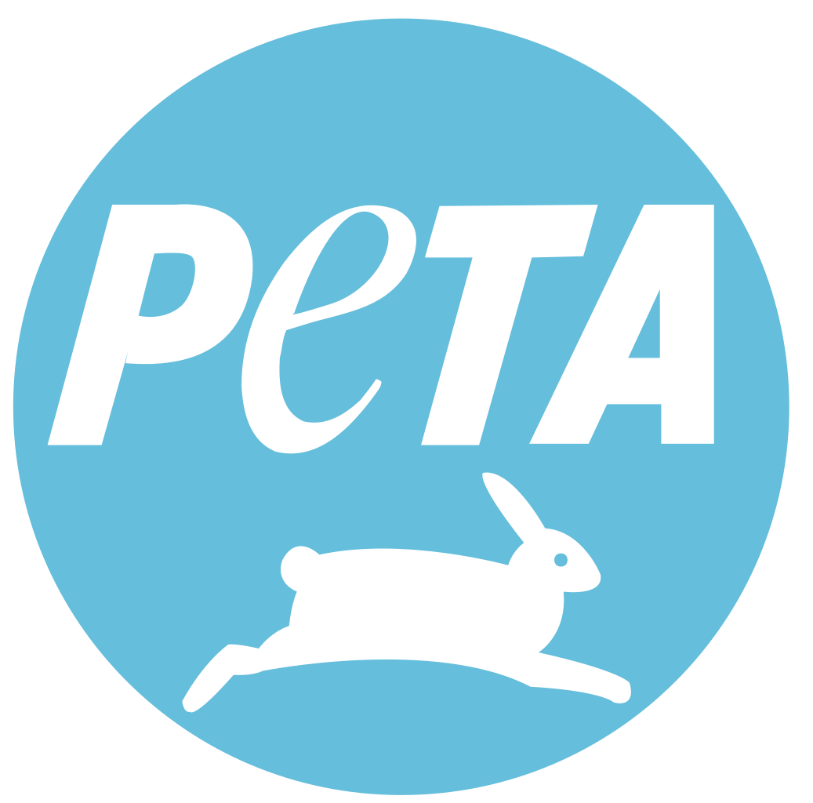
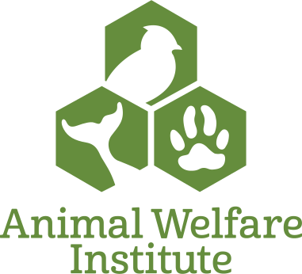

Organizations
|
PETA (People for the Ethical Treatment of Animals), the largest animal rights organization, advocates against specieism, where humans believe themselves to be superior to animals. The organization works to protect animals in laboratories, the food industry, clothing industry, the entertainment industry, and from pest control, spreading their message through education, cruelty investigations, animal rescue, legal changes, and protests. |
AWI (Animal Welfare Institute) was founded by Christine Stevens in 1951, its main purpose initially being to protect animals from experimental tests in laboratories. Since then, the organizations has broadened its purpose to all kinds of suffering caused by humans. This includes but is not limited to: experimental labs, factory farms, killing animals for sport, hunting, exploitation of habitats, commercial trade, and unethical breeding. |
|  |  |